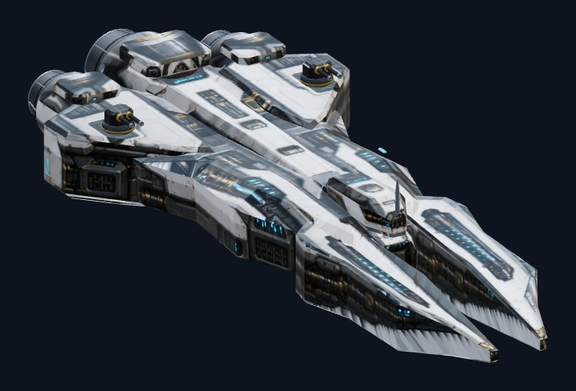
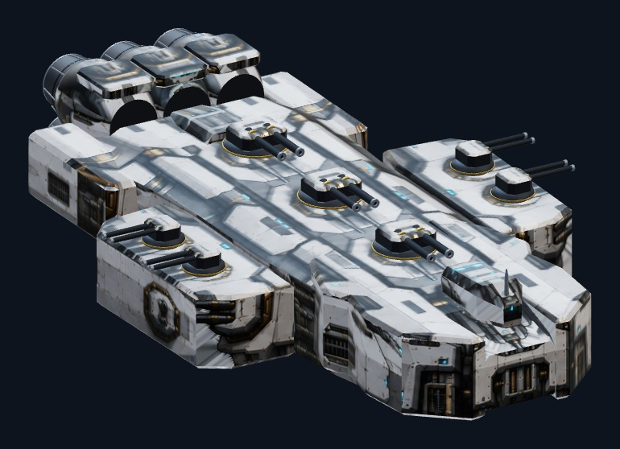
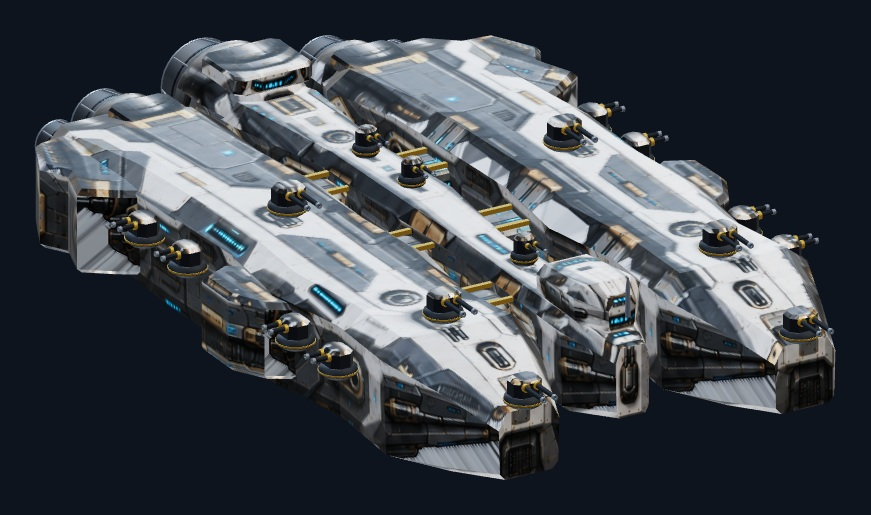
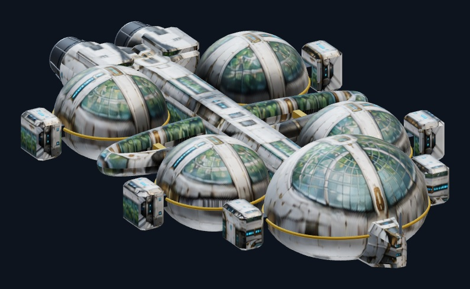
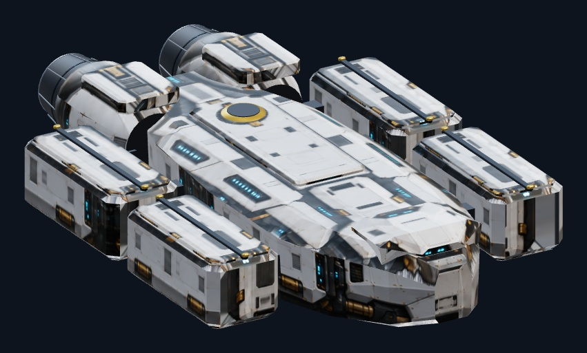
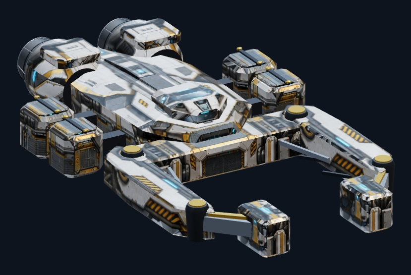
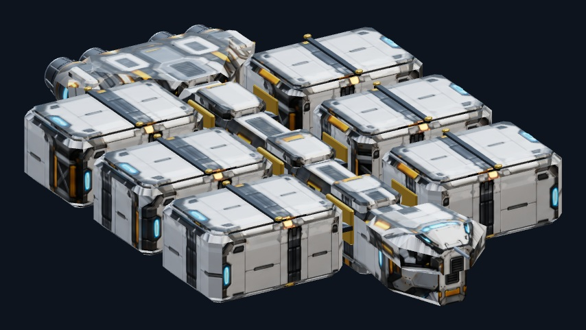
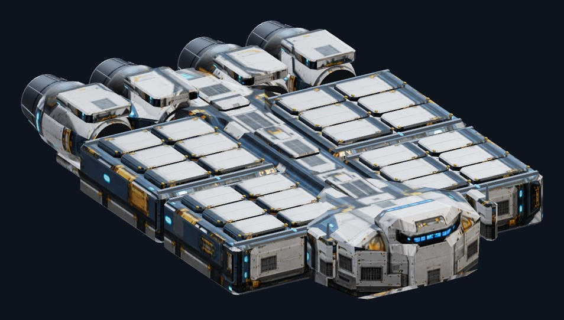

Destroyer14,532 → 4,780 triangles · 3 enginesExplore 3DFive-view referenceGLBEditable package
Battleship33,772 → 11,270 triangles · 6 enginesExplore 3DFive-view referenceGLBEditable package
Dreadnought51,176 → 16,036 triangles · 5 enginesExplore 3DFive-view referenceGLBEditable package
Colony Ship27,896 → 6,186 triangles · 2 enginesExplore 3DFive-view referenceGLBEditable package
Troop Transport11,072 → 6,378 triangles · 2 enginesExplore 3DFive-view referenceGLBEditable package
Construction Ship10,340 → 4,688 triangles · 2 enginesExplore 3DFive-view referenceGLBEditable package
Medium Freighter17,056 → 8,234 triangles · 4 enginesExplore 3DFive-view referenceGLBEditable package
Authority Freighter20,144 → 11,368 triangles · 4 enginesExplore 3DFive-view referenceGLBEditable package